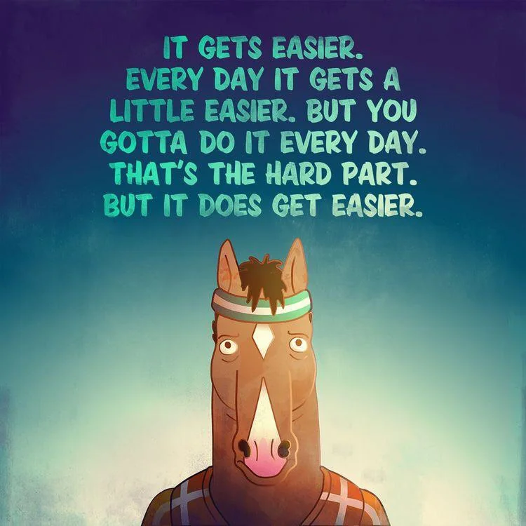

Founder, Whisk Labs
Decision intelligence for food-service operations.
- Onboarded 4 restaurant chains as founding design partners.
- Backed by Innovate@BU, UMass Amherst, and the coolest angels.
- Pitched at South by Southwest, Austin, 2026.
startups and finance
Based in San Francisco, I work on finance, strategy and growth at Blue Arcus Technologies, and I'm building Whisk Labs on the side, decision intelligence for food-service operations.
I have an MS in Finance from BU Questrom, and before grad school I co-founded and exited Enutero, a B2B menstrual health startup.

Hi, I'm Sathvika! Based in the Bay Area, I'm currently working on strategy, finance and tech at a super cool telecom company called Blue Arcus Technologies, and building my own startup Whisk Labs, decision intelligence for food ops. I did my MS Finance at BU Questrom in Boston, and before that co-founded and exited Enutero, a lean B2B menstrual health startup.
I think I hit the jackpot with geography honestly. Got to study in Boston, the education capital of the world, and now get to work in Silicon Valley, where innovation is happening at the speed of light (+ the insane nature this place has, not gonna lie).
I LOVE COFFEE and I'm always on the hunt for new cafe recs, so pls send them my way if you've got a favourite spot.
On weekends you can find me at the movies (guys trust me the AMC A-List pass is SO worth it, get one) and on long weekends I'm definitely doing a road trip, hike, or camping somewhere. I listen to music very religiously so if you need any recs pls don't hesitate, I will have opinions.
I have always been a nerd about work for as long as I can remember, so I will definitely cry my heart out at a 3 hour south indian movie but can go right back to building my startup or getting deliverables done at work. I also watch a lot of YouTube and Netflix. My fav shows are The Big Bang Theory, BoJack Horseman, Modern Family, Suits, Succession (yes the HBO one).
I also love traveling. My first "independent adult trip" was to China, a country whose language I didn't understand at all, but it was so fun to learn new things along the way. I live to travel honestly, I think it's so beautiful that we get to see so much new stuff. On my trips I hoard up my phone's memory taking way too many pictures, and I collect postcards for my favourite people and myself.
Work Experience
Deep tech telecom is at a fascinating inflection point right now. 5G, cloud-native infrastructure, edge computing, microservices, and AI-driven applications are changing what connectivity can look like.
At Blue Arcus, we're building the carrier-grade 4G/5G core infrastructure that makes these next-generation networks possible, powering everything from smart factories, campuses, mining, robotics, and logistics hubs to critical infrastructure. 500+ production deployments across 20+ countries.
If you ever want to know more about us, or want to talk telecom tech, 5G, distributed systems, AI, or just nerd out about where tech and connectivity are headed, reach out at sathvika@bluearcus.com or DM me.
Decision intelligence for food-service operations.
Sustainable menstrual healthcare startup with end-to-end period care infrastructure.
Education
Accelerated 1-year program
GPA 3.92 / 4.00
Projects
Conducted DCF and EV/EBITDA trading comps across a 6-firm peer set; analyzed multi-tranche bond issuance.
Designed a $250M structured private credit fund with a three-tranche capital stack; engineered a 10-year waterfall model with SDG mapping.
End-to-end DCF for a $39M acquisition incorporating US/Hong Kong cross-border tax assumptions and sensitivity analysis.
Built a ResNet18-based regression pipeline for Amyloid PET quantification, predicting Centiloid scores from 3D PET brain scans across radio tracers. Achieved lowest MAE of 11.79.
Technical Skills
DCF Valuation, LBO Modeling, M&A Analysis, Scenario & Sensitivity Analysis, ESG Fund Design, F&O, Equity Trading, EV/EBITDA Comps, Waterfall & IRR Modeling
Python, R Studio, XGBoost, Prophet, Logistic Regression, ResNet18, Pandas, NumPy, Matplotlib
Excel, Bloomberg, PowerPoint, Financial Modeling & Valuation
Awards & Achievements
Elsewhere
Say hi. Always up for a good conversation.
Off the clock